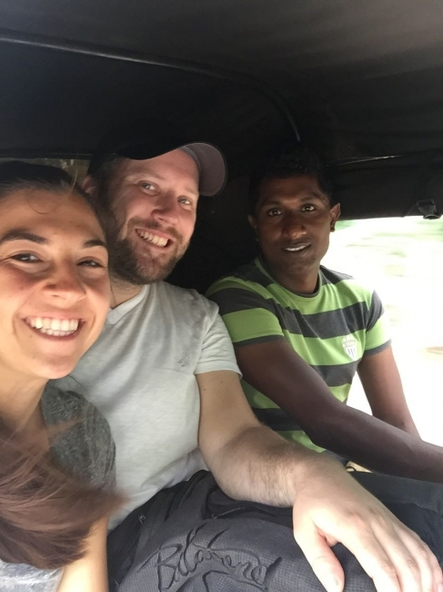
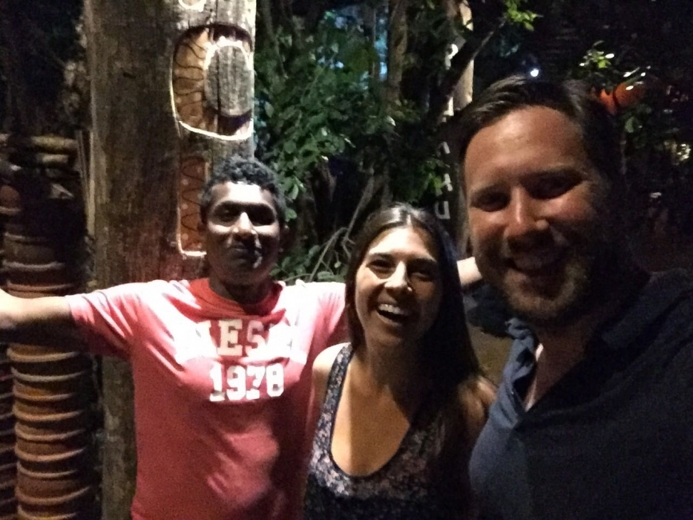

Our Vision
To be recognized globally as Sri Lanka’s most trusted, transparent, and customer-focused private tour operator, delivering authentic island experiences rooted in safety, comfort, and genuine local hospitality.
Discover the true heart of Sri Lanka with a team dedicated to authentic, safe, and stress-free private travel. We transform ordinary holidays into unforgettable personal journeys across ancient kingdoms, misty mountains, and golden tropical shores.


AUTHENTIC TRAVEL. LOCAL HOSPITALITY.Loving Lanka Tours was founded on a simple yet powerful passion: to share the authentic beauty, rich culture, and warm hospitality of Sri Lanka with travelers from across the globe.
The company is led by Nadeeka, an independent, highly experienced, and government-certified English-speaking chauffeur guide who has spent over a decade navigating every corner of the island. What started as a personal dedication to providing exceptional on-the-ground driving and guiding services has grown into a trusted private tour operation.
Nadeeka’s hands-on expertise, deep local knowledge, and commitment to traveler safety mean that every journey is managed with meticulous care. Rather than treating travelers like tourists on a rigid schedule, Nadeeka and the Loving Lanka Tours team treat every visitor like an honored guest visiting their home. From seamless airport greetings at Bandaranaike International Airport to handpicked hotels, flexible routing, and deep cultural storytelling, we ensure your Sri Lankan holiday is completely effortless, safe, and deeply personal.
To be recognized globally as Sri Lanka’s most trusted, transparent, and customer-focused private tour operator, delivering authentic island experiences rooted in safety, comfort, and genuine local hospitality.
To eliminate the complexities of foreign travel by providing expertly curated, 100% private itineraries, professional English-speaking chauffeur guides, and fully transparent, stress-free logistical support—ensuring every traveler discovers the true magic of Sri Lanka at their own pace.
No rigid large-group coaches or fixed timelines; travel entirely at your own pace with the freedom to modify daily stops.
Led by Nadeeka and a hand-picked team of licensed professionals dedicated to your safety, comfort, and deep cultural insight.
Comprehensive packages covering private air-conditioned vehicles, fuel, highway charges, and parking.
Personally vetted accommodations matched to your comfort style alongside round-the-clock on-ground assistance from arrival to departure.
From traditional village cooking demonstrations and tea factory tastings to custom wildlife safaris, experience the true heart of Sri Lanka.
Booking our family holiday with Loving Lanka Tours was the best decision we made. Our driver guide took care of every single detail, from airport pickup to seamless hotel check-ins, keeping us safe and comfortable throughout.
An absolute 5-star experience! The customized 10-day itinerary let us experience the wild elephants in Udawalawe and the beauty of Ella without a single logistical stress. Highly recommended!
Our honeymoon was magical. From the romantic room touches to the private vehicle comfort, Loving Lanka Tours made our dream trip effortless and unforgettable.
Let's craft your custom private tour package together. Share your travel dates, group size, and interests for a personalized quote.